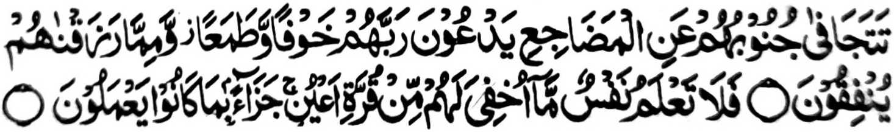

“Pekhalekat so manga kilid iran ko manga iga-an, pephamangeni siran ko Kadnan niran sa kalek, a go arap: go so saba-ad ko inibegay Ami kiran na ipephamemegay ran. Na di katawan o ginawa so pagema-an Aken a bagi-an niran a kapipiya ginawa, a balas, sabap ko pinggola-ola iran.” (Surah As-Sajdah: 16-17)